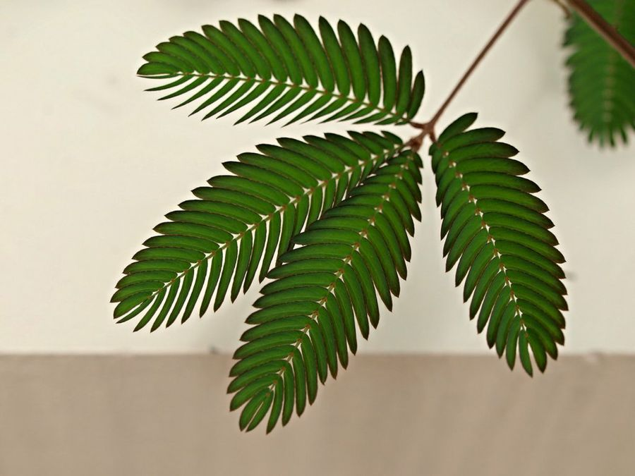
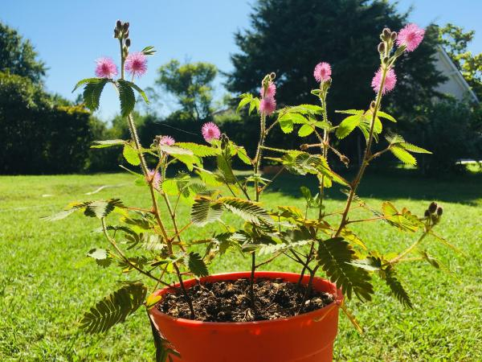

Curiosidades
- Reacciona al tacto gracias a cambios de presión en sus células.
- Es símbolo de sensibilidad en muchas culturas.
- Sus movimientos han inspirado experimentos científicos desde el siglo XVIII.



La Mimosa pudica o “dormilona” es una planta única por su movimiento sensible al tacto. Al ser tocadas, sus hojas se pliegan y su tallo se inclina levemente, simulando “dormirse”. Es originaria de América del Sur y pertenece a la familia Fabaceae.
- Planta herbácea de hojas compuestas y verdes brillantes.
- Flores rosadas en forma de pompón.
- Puede alcanzar entre 30 y 50 cm de altura.
- Se cierra al tacto o en la oscuridad (nictinastia).
Crece en zonas tropicales y subtropicales, donde haya humedad y buena luz solar. Prefiere suelos ligeros y drenados, típicos de bosques o praderas tropicales.
- ☀️ Luz: abundante, sin exposición solar extrema.
- 💧 Riego: moderado, evita encharcar el suelo.
- 🌡️ Temperatura: ideal entre 18°C y 30°C.
- 🌱 No tolera heladas.
- Reacciona al tacto gracias a cambios de presión en sus células.
- Es símbolo de sensibilidad en muchas culturas.
- Sus movimientos han inspirado experimentos científicos desde el siglo XVIII.